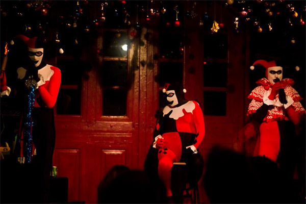
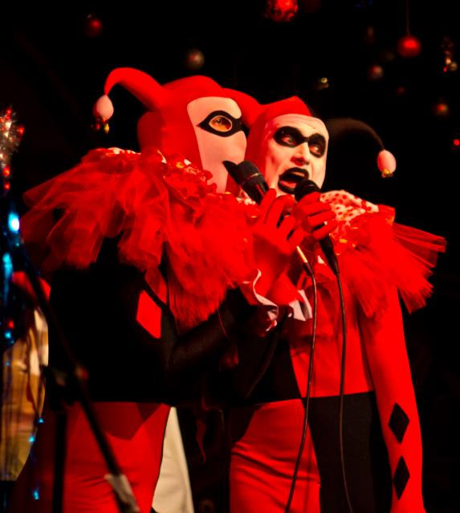

Dennis Agerblad Band var en del af jule showet som kørte Fredag 31/11 Lørdag 1/12 Fredag 7/12 Lørdag 8/12 Dennis Agerblad Band bestod denne dag af: Hairwerk Hugh Mongous, Knud Vesterskov og Dennis Agerblad.

